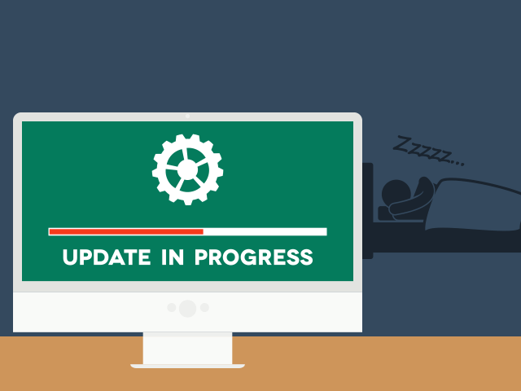

Una de las cosas más importantes que todo usuario debe tener presente es el del siempre mantenter en nuestro ordenador o smartphone nuestro sistema operativo actualizado a la última versión para tener un mejor funcionamiento y también se corrigen varios errores en nuestro sistema.

Existen infinidades de motivos por el cuál se haya actualizado el sistema, por ejemplo cuando un sistema cambia de aspecto y podría ser un poco más amigable para el usuario, también existen otros motivos, como el de corregir errores, es importante mencionar que es por eso que necesitas siempre estar actualizando tu sistema ya que los desarrolladores se encargan de corregir errores y muchos de ellos son de seguridad, a veces se llegan encontrar fallas de vunerabilidad es por eso que siempre tienes que estar al tanto de ello, otros pueden ser por compatibilidad con algunas nuevas plataformas, tener un mejor rendimiento del software y también de soportar y que las aplicaciones sean más óptimas al correrlas en el sistema.
Es por eso que es necesario que actualizes tu sistema, trae muchos beneficos el hacerlo, y evita que tu ordenador/dispositivo sea menos eficiente y puede también que no sea compatible con algunas plataformas. Como sabemos la industrai del software siempre está en constante cambio, es mundo que no para, nuevas cosas se crean, optimizan, etc.